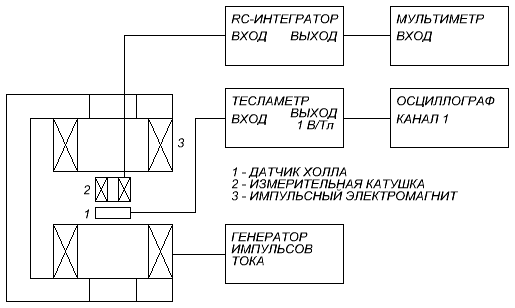
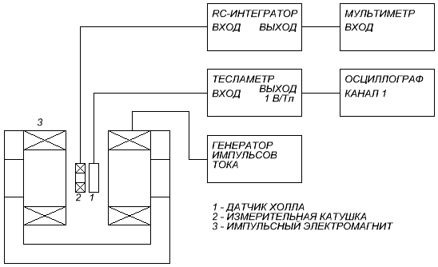
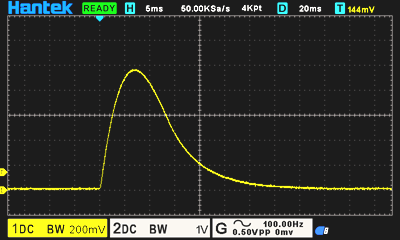
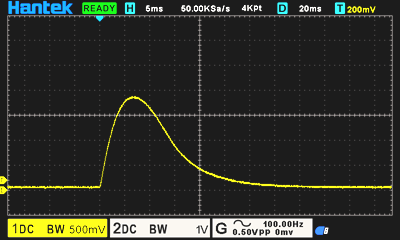
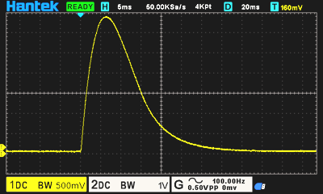
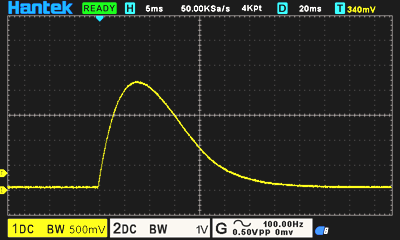
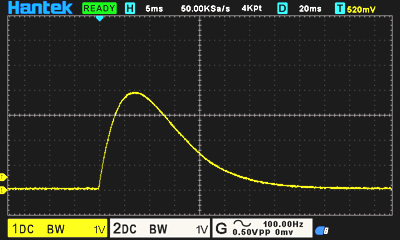
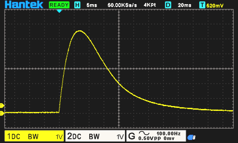
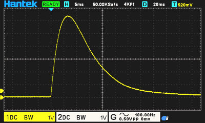
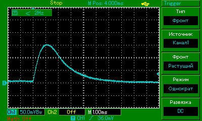

Таблица 5.1. Параметры различных измерительных катушек.
| Тип катушки |
Примерная площадь
потокосцепления, мм2 |
Активное сопротивление
(расчет), Ом |
Активное сопротивление (измерение),
Ом |
Индуктивность (расчет),
мГн |
Индуктивность (измерение),
мГн |
| М-тип |
≈1000 |
1.666 |
1.95 |
0.01382 |
- |
| М-тип |
≈10000 |
7.798 |
8.25 |
0.1824 |
0.16 |
| С-тип |
≈10000 |
12.63 |
13.16 |
0.3921 |
0.34 |
Для проверки RC-интегратора с
измерительными катушками разных типов использовался импульсный электромагнит -
двухкатушечный импульсный индуктор [9], имеющий как
осевой так и радиальный доступ в рабочую зону, в комплекте с различными
емкостными накопителями энергии [5]. Измерительные
схемы показаны на рис. 5.1 и 5.2. Установка для работы с катушкой С-типа (рис.
5.1) состоит из импульсного электромагнита (3), соединенного с генератором
мощных одиночных импульсов тока - емкостным накопителем энергии
[5]. Примерно в центре импульсного электромагнита в его рабочей зоне
расположен датчик Холла (1), подключенный к импульсному тесламетру
[11], служащему для измерения амплитуды магнитной индукции. Выход
тесламетра с коэффициентом преобразования 1 В/Тл подается на вход осциллографа (DSO2D15)
для контроля формы импульса магнитной индукции. Сигнал с измерительной катушки
(2), расположенной в непосредственной близости от датчика Холла, подается на
RC-интегратор, а с него - на мультиметр (DT9205A
с диапазоном измерений 200 мВ или 2 В). Установка для работы с катушкой М-типа
(рис. 5.2) построена по аналогичной схеме, за исключением того, что вместо
осевого используется радиальный (боковой) доступ в рабочую зону импульсного
электромагнита.

Рис. 5.1.
Установка для измерения амплитуды магнитной индукции с помощью катушки С-типа.

Рис. 5.2.
Установка для измерения амплитуды магнитной индукции с помощью катушки М-типа.
На рис. 5.3 - 5.10 показаны формы импульсов магнитной индукции
при подключении импульсного электромагнита к различным емкостным накопителям при
разных уровнях заряда. В таблицах 5.2 и 5.3 приведены значения амплитуды
магнитной индукции при разных уровнях заряда емкостных накопителей и
соответствующие им показания мультиметра, подключенного к выходу
RC-интегратора с измерительными катушками различных типов.

Рис. 5.3. Форма
импульса магнитной индукции в центре рабочей зоны импульсного электромагнита при
подключении к емкостному накопителю энергии 2 кДж 900 В при уровне заряда 25 %:
цена деления по вертикали 200 мТл/дел., цена деления по горизонтали 5 мс/дел.
Амплитуда магнитной индукции 0.96 Тл.

Рис. 5.4. Форма
импульса магнитной индукции в центре рабочей зоны импульсного электромагнита при
подключении к емкостному накопителю энергии 2 кДж 900 В при уровне заряда 50 %:
цена деления по вертикали 500 мТл/дел., цена деления по горизонтали 5 мс/дел.
Амплитуда магнитной индукции 1.85 Тл.
Рис. 5.5. Форма
импульса магнитной индукции в центре рабочей зоны импульсного электромагнита при
подключении к емкостному накопителю энергии 2 кДж 900 В при уровне заряда 75 %:
цена деления по вертикали 500 мТл/дел., цена деления по горизонтали 5 мс/дел.
Амплитуда магнитной индукции 2.7 Тл.

Рис. 5.6. Форма
импульса магнитной индукции в центре рабочей зоны импульсного электромагнита при
подключении к емкостному накопителю энергии 2 кДж 900 В при уровне заряда 100 %:
цена деления по вертикали 500 мТл/дел., цена деления по горизонтали 5 мс/дел.
Амплитуда магнитной индукции 3.4 Тл.

Рис. 5.7. Форма
импульса магнитной индукции в центре рабочей зоны импульсного электромагнита при
подключении к емкостному накопителю энергии 16 кДж 1800 В при уровне заряда 25
%: цена деления по вертикали 500 мТл/дел., цена деления по горизонтали 5 мс/дел.
Амплитуда магнитной индукции 2.2 Тл.

Рис. 5.8. Форма
импульса магнитной индукции в центре рабочей зоны импульсного электромагнита при
подключении к емкостному накопителю энергии 16 кДж 1800 В при уровне заряда 50
%: цена деления по вертикали 1 Тл/дел., цена деления по горизонтали 5 мс/дел.
Амплитуда магнитной индукции 3.9 Тл.

Рис. 5.9. Форма
импульса магнитной индукции в центре рабочей зоны импульсного электромагнита при
подключении к емкостному накопителю энергии 16 кДж 1800 В при уровне заряда 75
%: цена деления по вертикали 1 Тл/дел., цена деления по горизонтали 5 мс/дел.
Амплитуда магнитной индукции 5.3 Тл.

Рис. 5.10. Форма
импульса магнитной индукции в центре рабочей зоны импульсного электромагнита при
подключении к емкостному накопителю энергии 16 кДж 1800 В при уровне заряда
90 %: цена деления по вертикали 1 Тл/дел., цена деления по горизонтали 5
мс/дел. Амплитуда магнитной индукции 6.4 Тл.
Таблица 5.2. Катушка С-типа с площадью потокосцепления 10000 мм2.
| Тип емкостного накопителя |
Уровень заряда, % |
Амплитуда магнитной
индукции, Тл |
Начальное напряжение на
выходе RC-интегратора, мВ |
Коэффициент
преобразования, мВ/Тл |
| 2 кДж 900 В |
25 |
0.96 |
55 |
57 |
|
2 кДж 900 В |
50 |
1.85 |
134 |
72 |
|
2 кДж 900 В |
75 |
2.7 |
205 |
76 |
|
2 кДж 900 В |
100 |
3.4 |
276 |
81 |
| 16 кДж
1800 В |
25 |
2.2 |
144 |
65 |
|
16 кДж 1800 В |
50 |
3.9 |
288 |
74 |
|
16 кДж 1800 В |
75 |
5.3 |
423 |
80 |
|
16 кДж 1800 В |
90 |
6.4 |
486 |
76 |
Коэффициент преобразования вначале несколько растет с увеличением
амплитуды магнитной индукции, возможно, в связи с нелинейностью диодного
выпрямителя (прямое падение напряжения на диодах), выходя на уровень 80 мВ/Тл.
Можно считать коэффициент преобразования равным примерно 75 ... 80 мВ/Тл для
магнитных импульсов с амплитудой индукции больше 2 Тл.
Таблица 5.3. Катушка М-типа с площадью потокосцепления 10000 мм2.
| Тип емкостного накопителя |
Уровень заряда, % |
Амплитуда магнитной
индукции, Тл |
Начальное напряжение на
выходе RC-интегратора, мВ |
Коэффициент
преобразования, мВ/Тл |
| 2 кДж 900 В |
25 |
0.96 |
54 |
56 |
|
2 кДж 900 В |
50 |
1.85 |
132 |
71 |
|
2 кДж 900 В |
75 |
2.7 |
205 |
76 |
|
2 кДж 900 В |
100 |
3.4 |
290 |
85 |
| 16 кДж
1800 В |
25 |
2.2 |
148 |
67 |
|
16 кДж 1800 В |
50 |
3.9 |
308 |
79 |
|
16 кДж 1800 В |
75 |
5.3 |
450 |
85 |
|
16 кДж 1800 В |
90 |
6.4 |
525 |
82 |
Коэффициент преобразования для катушки М-типа ведет себя
аналогично, выходя на уровень примерно 80 ... 85 мВ/Тл. Можно считать
коэффициент преобразования равным 75 ... 85 мВ/Тл для магнитных импульсов с
амплитудой индукции больше 2 Тл.
Коэффициенты преобразования получаются достаточно близкими друг к
другу для катушек обоих типов с одинаковой площадью потокосцепления. Меньшая
величина коэффициента преобразования по сравнению с предварительно данной в п. 3
оценкой в 100 мВ/Тл может объясняться достаточно длительными фронтами магнитных
импульсов (порядка 5 ... 7 мс), сравнимыми по времени с постоянной
RC-цепи (10 мс). Для повышения точности измерений
можно использовать RC-интегратор с большей постоянной
времени (например, RC = 0.1 с) и, желательно,
измерительные катушки с пропорционально большей площадью потокосцепления
(например, 0.1 м2), иначе выходной сигнал будет слишком низкий
(примерно 10 мВ/Тл для катушек с площадью потокосцепления 0.01 м2).
Таблица 5.4. Катушка М-типа с площадью потокосцепления 1000 мм2.
| Тип емкостного накопителя |
Уровень заряда, % |
Амплитуда магнитной
индукции, Тл |
Начальное напряжение на
выходе RC-интегратора, мВ |
Коэффициент
преобразования, мВ/Тл |
|
16 кДж 1800 В |
90 |
6.4 |
26 |
4.1 |
Выходной сигнал катушки М-типа с площадью потокосцепления 1000 мм2
при уровне амплитуды магнитной индукции 6.4 Тл мал, соответственно, коэффициент
преобразования получается невысоким и далек от уровня насыщения, который
оценивается примерно в 8 мВ/Тл, что соответствует импульсным магнитным полям с
амплитудой индукции примерно 20 Тл.
RC-интегратор с измерительной катушкой
С-типа с площадью потокосцепления 10000 мм2 был также опробован для
оценки амплитудного значения магнитной индукции в рабочей зоне индуктора
малогабаритной установки намагничивания [10, 13],
в которой длительность фронтов магнитных импульсов существенно меньше 10 мс. Для
контроля параметров импульса магнитной индукции в зоне намагничивания индуктора
использовался импульсный тесламетр [11] и осциллограф
UTD2102CEL-R. Так как полоса пропускания тесламетра
ограничена (примерно от 0 до 150 ... 200 Гц), то, чтобы исключить погрешность
измерения сигнал на осциллограф подавался непосредственно с датчика Холла
[6]. Форма импульса магнитной индукции в центре
рабочей зоны показана на рис. 5.11. Измеренная амплитуда магнитной индукции в
центре рабочей зоны составляет примерно 3.33 Тл с одним полюсным наконечником,
длительность фронта импульса примерно 1 мс, что существенно меньше постоянной
времени RC-интегратора (10 мс).

Рис. 5.11. Форма
импульса магнитной индукции в центре рабочей зоны импульсного индуктора без
одного полюсного наконечника при подключении к емкостному накопителю энергии 150
Дж 550 В при уровне заряда 100 %: цена деления по вертикали 50 мВ/дел., цена
деления по горизонтали 1 мс/дел.
Чувствительность датчика
Холла 45 мВ/Т, амплитуда магнитной индукции 3.33 Тл.
При проведении измерений амплитуды индукции данного магнитного
импульса с помощью измерительной катушки начальное напряжение на выходе
интегратора составляет 400 мВ. Коэффициент преобразования при этом равен 120
мВ/Тл и вполне соответствует рассчитанному в п 3 с учетом некоторого
дополнительного вклада за счет двухполупериодного выпрямления.